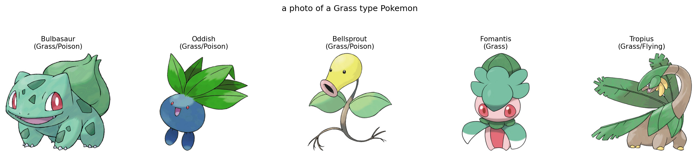
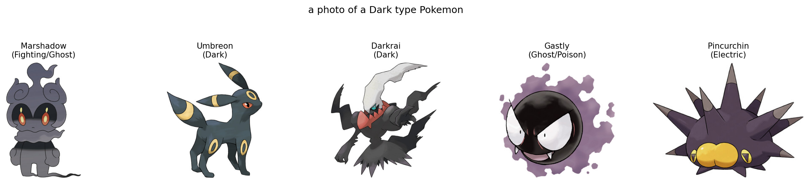

AI Disclaimer: AI tools were used to assist with code
generation and formatting in this repository. All code has been tested,
reviewed, and structured to ensure it works correctly and is easily
replicable.
Steam Reviews
Question 1
Report the number of reviews retained after filtering, and the average
length (in tokens) of Short and Long reviews.
Answer
Total reviews retained: 20,497 (after discarding middle 50%)
Short reviews (≤ q25 = 11 words): 10,463 reviews, avg 6.39 words
Long reviews (≥ q75 = 179 words): 10,034 reviews, avg 493 words
Question 2
Report the dimensions of the TF-IDF matrix and the MiniLM embedding
matrix. Briefly explain why TF-IDF is sparse while MiniLM embeddings are
dense.
Answer
TF-IDF: (20,497 × 25,085), 99.68% sparse
MiniLM: (20,497 × 384), dense
TF-IDF scores each vocabulary term independently. A 50-word review might
touch 30 unique terms out of 25,085, everything else is zero.
MiniLM runs the entire sentence through a neural network that outputs a
384-d vector. All dimensions get non-zero values because the model
captures meaning from the whole sentence, not by counting words.
Question 3
For each pipeline, report clustering agreement metrics with respect to
ground-truth length labels: homogeneity, completeness, v-measure, ARI,
AMI.
Answer
TF-IDF (2 pipelines)
Pipeline
Homogeneity
Completeness
V-Measure
ARI
AMI
SVD + K-Means
0.0301
0.161
0.0507
0.0057
0.0507
SVD + Agglomerative
0.0276
0.157
0.0470
0.0050
0.0470
TF-IDF clustering barely separates Short vs Long. UMAP and no-reduction
options were skipped—infeasible on sparse, high-dimensional data.
MiniLM (6 pipelines)
Pipeline
Homogeneity
Completeness
V-Measure
ARI
AMI
None + K-Means
0.509
0.509
0.509
0.613
0.509
None + Agglomerative
0.543
0.547
0.545
0.643
0.545
SVD + K-Means
0.508
0.509
0.509
0.612
0.509
SVD + Agglomerative
0.646
0.650
0.648
0.742
0.648
UMAP + K-Means
0.558
0.559
0.558
0.666
0.558
UMAP + Agglomerative
0.553
0.556
0.555
0.658
0.555
Best: MiniLM + SVD(50) + Agglomerative. V-Measure
0.648, ARI 0.742.
Question 4
Compare TF-IDF and MiniLM performance. Which separates Short vs Long
more cleanly, and why?
Answer
Metric
TF-IDF
MiniLM
Gap
V-Measure
0.047
0.648
13.8x
ARI
0.005
0.742
148x
Homogeneity
0.028
0.646
23x
MiniLM outperforms TF-IDF on all metrics. The neural model captures
sentence structure and semantic meaning, while TF-IDF only counts word
frequencies. Long reviews differ from short ones in topic depth,
discourse structure, and complexity—neural embeddings pick up on these
differences naturally. Transformers also attend to longer sequences
differently, creating distinct representations for different-length
inputs.
SVD works better than UMAP here. Document length is a linear signal that
affects all dimensions similarly. UMAP's focus on local neighborhoods
blurs this global pattern.
Question 5
Plots and Visualization: Reduce embeddings to 2D using PCA and create
split visualizations.
MiniLM clearly separates Short and Long clusters. TF-IDF is scattered.
With its first two PCs explaining 11.83% variance (vs 4.02% for TF-IDF),
MiniLM projects better in low dimensions.
Question 6
Report the dimensions of the TF-IDF game matrix and the MiniLM game
embedding matrix.
Answer
TF-IDF: (200 × 16,554), vocabulary from concatenated positive reviews
Pick the best pipeline and report two high-purity clusters with genres,
purity, and representative games.
Answer
I selected MiniLM + SVD(50) + Agglomerative because it performed the
best in Task 1 and shows strong genre purity.
Cluster 3 (13 games, 100% pure)
Top genres: Action (100%), Massively Multiplayer (38%), Indie (23%)
Game
Genres
Counter-Strike 2
Action, Massively Multiplayer
Dota 2
Action, Massively Multiplayer, RPG
Team Fortress 2
Action, Massively Multiplayer
These are competitive online multiplayer games. All have the Action tag.
Cluster 1 (62 games, 85% pure)
Top genres: Action (85%), Adventure (56%), RPG (44%)
Game
Genres
Dying Light
Action, RPG
Black Mesa
Action, Adventure, Indie
Borderlands 3
Action, RPG
Narrative-driven action games with RPG elements. The mainstream AAA
cluster.
Question 9
Report assigned cluster ID, top 3 genres, and 3 representative games.
Answer
We used MiniLM + SVD + Agglomerative.
Cluster ID: 4
Top genres: Action (80%), Adventure (55%), RPG (35%)
Game
Genres
Dying Light
Action, RPG
Black Mesa
Action, Adventure, Indie
Borderlands 3
Action, RPG
Why this works as genre estimation: Games are multi-label. Rather than
predicting one genre, we assign the held-out game to its nearest cluster
and inherit that cluster's genre distribution. The held-out game shares
Action-Adventure-RPG characteristics because it clusters semantically
with games having those tags.
Question 10
For negative reviews: report 3-5 clusters with top terms, exemplar
reviews, and labels.
Answer
I selected MiniLM + SVD(50) + Agglomerative because it achieved the best
performance in Task 1 (V-Measure 0.648, ARI 0.742) and Task 2 (up to
100% genre purity).
"First of all it's a beautiful game. The visuals are great, It also has
some unique combat that when you get used to it, it's enjoyable. But
beyond that...this game is a boss simulator..."
"Is a fun game but with a lot of problems. First of all performance is
not great and not consistent at all through the chapters. There's a
beautiful world to look at but full of invisible walls..."
Label: Boss-focused gameplay issues
Cluster 1 - Frustrating Combat & Boss Design (21 reviews)
"The other negative reviews have already covered most of it. I can just
add that I too find the game very frustrating. I want to love it, but
the poor combat design, getting locked into animations far too often..."
"I really wanted to like this game, but it falls victim to many poor
design decisions and I found the game far more tedious and frustrating
than it should be..."
"I wanted to share my recent experience... I'm running this on an i7
13th gen, RTX 4080, and 32 gigs RAM... the game crashes consistently..."
"Not really sure what these purchased reviews are all about. Game runs
terribly.1440p, Cinematic, 4090, 32GB Ram, 13900kConstant stutters."
Label: Performance Issues
Question 11
For positive reviews: repeat with praise clusters.
Answer
I selected MiniLM + SVD(50) + Agglomerative because it achieved the best
performance in Task 1 (V-Measure 0.648, ARI 0.742) and Task 2 (up to
100% genre purity).
"This game has the big awesome set pieces and aesthetic from the old
school God of War games, the core gameplay of a Soul-like (albeit a tad
more forgiving), really sick and fast paced Sekiro / Bloodborne
combat..."
"(Review in progress, 8h so far, 2 chapters completed)This game
surprised me more than I expected. The level of polish and care put into
it is quite impressive..."
Label: Positive gameplay experience
Cluster 1 - Mythical Chinese Game Excellence (15 reviews)
Terms: game, wukong, chinese, myth, good, black, black myth, games, myth
wukong, like
"Black Myth: Wukong was released under a lot of anticipation after
gameplay showcases had been shown over the past few years, leading
people to even question if the game would really come out like that..."
"Black Myth Wukong is an absolute masterclass of a game. All the hype,
all the praise, all the positive buzz surrounding this game...they're
absolutely deserved..."
"---{ Graphics }---☑ You forget what reality is☑ Beautiful☑ Good☑ Decent
☑ Bad☑ Don't look too long at it☐ MS-DOS---{ Gameplay }---☑ Very good☐
Good☐ It's just gameplay☐ Mehh☐ Watch paint dry instead☐ Just don't..."
Include prompting strategy and 3 LLM-generated label examples.
Answer
Model: Qwen/Qwen3-4B-Instruct-2507
Input per cluster: 10 top TF-IDF terms, 2 exemplar reviews
Prompt:
You are analyzing Steam review clusters. Input:
Top Terms: [terms]
Exemplar Reviews: [reviews]
Output a 3-6 word label describing what these reviews have in common.
Terms: game, wukong, chinese, myth, good, black, black myth, games, myth
wukong, like
LLM output: "Mythical Chinese Game Excellence"
Image Clustering
Question 13
If the VGG network is trained on a dataset with totally different
classes as targets, why would one expect its features to have
discriminative power for a custom dataset?
Answer
VGG16 learns visual patterns, not ImageNet-specific categories. Early
layers detect edges, textures, and colors. Middle layers learn shapes.
Deep layers capture abstract concepts. Because ImageNet has 1000 diverse
classes, the network learns general visual primitives that transfer to
new domains.
The 4096-d first FC layer encodes high-level content that distinguishes
flower types even though no flowers appeared in training. VGG16 learns
how to see, not what to see.
Question 14
Explain how the helper code performs feature extraction.
Answer
Load VGG16 from torch.hub with pretrained ImageNet weights
Preprocess: resize to 224×224, center crop, normalize with ImageNet
mean/std
Run through 13 convolutional layers with pooling
Apply 7×7 adaptive average pooling
Flatten from 512×7×7 to 25,088 elements
Pass through first FC layer only → 4096-d embedding
The code discards fc[1] and fc[2], keeping only fc[0] output.
Question 15
How many pixels in original images? How many features does VGG extract
per image?
Answer
Original: 224 × 224 × 3 = 150,528 pixels
VGG16 output: 4,096 features
Dataset: 3,670 images
Compression: 150,528 → 4,096 (36.8x reduction)
Question 16
Are extracted features dense or sparse? Compare with TF-IDF.
Answer
VGG16 features are dense.
TF-IDF vectors are mostly zeros. A 50-word review might touch 30 terms
out of 25,000, everything else is 0, giving 99%+ sparsity.
VGG16 isn't like that. All 4096 neurons connect to every one of 25,088
pooled features, so every dimension has a value. All dimensions capture
information about the entire image.
VGG16 isn't like that. All 4096 neurons connect to every one of the
25,088 pooled features, so every dimension has a value. Information
about the whole image ends up spread across all dimensions.
Question 17
Map features to 2D with t-SNE and plot. Color by ground-truth labels.
Some flower classes form distinct blobs—tulips and sunflowers cluster
pretty cleanly. Others overlap, like roses and dandelions, which makes
sense since they have similar petal structures. A few classes split into
multiple small clusters, probably because of variation within each class
(different colors, angles, or developmental stages).
The five classes don't separate perfectly, which matches what we'll see
later with clustering: the features capture class structure well enough,
but aren't cleanly separable enough for any clustering method to nail
it. Still, for a network trained on ImageNet that's never seen flowers,
the class structure that emerges is pretty good.
Question 18
Report best ARI result. For HDBSCAN, use parameter grid over
min_cluster_size and min_samples.
Answer
Best: ARI = 0.5635 (UMAP + HDBSCAN)
Dim Reduction
Clustering
Parameters
ARI
Clusters
Noise
UMAP
HDBSCAN
min_cluster_size=50, min_samples=10
0.5635
10
934
Best ARI by method:
Method
Best Clustering
ARI
None (4096-d)
Agglomerative
0.2184
SVD (50-d)
K-Means
0.1947
UMAP (50-d)
HDBSCAN
0.5635
Autoencoder (50-d)
Agglomerative
0.2344
HDBSCAN grid (on UMAP features):
min_cluster_size
min_samples
Clusters
Noise
ARI
5
3
108
1,723
0.097
10
3
55
1,673
0.142
20
5
21
1,137
0.408
50
10
10
934
0.564
What stands out:
UMAP + HDBSCAN performs best, with 2.6x better ARI than anything else.
UMAP's non-linear embedding works well with density-based clustering.
Linear methods (SVD, no reduction) struggle, suggesting the flower
feature manifold has non-linear structure.
Conservative HDBSCAN settings help: larger min_cluster_size and
min_samples prevent the algorithm from finding 108 tiny clusters and
instead settle on 10 meaningful ones.
The autoencoder performs similar to raw features, so it's not adding
much beyond what's already there.
Question 19
Report MLP test accuracy on original and reduced-dimension features.
Does performance suffer? Does this align with clustering results?
Answer
Feature
Dimension
Accuracy
Original VGG16
4,096
91.01%
SVD
50
91.14%
UMAP
50
80.79%
Autoencoder
50
88.56%
SVD actually beats the original features—91.14% vs 91.01%, a 0.13% gain
while cutting dimensions by 98.8%. UMAP loses 10.2 points. Autoencoder
sits in the middle at 88.56%.
Comparing with clustering:
Method
Clustering ARI
Classification Accuracy
SVD
0.195 (3rd)
91.14% (1st)
UMAP
0.564 (1st)
80.79% (4th)
UMAP excels at clustering but struggles with classification. SVD shows
the opposite trend.
UMAP preserves local neighborhoods (good for density-based clustering)
but distorts global structure (bad for linear classifiers). SVD
preserves global variance (good for classification) but doesn't build a
cluster-friendly manifold.
Use SVD for classification accuracy, UMAP for clustering.
Multi-modal
Note: We use the open_clip library instead
of the official OpenAI clip library. Both load the same
ViT-L-14 model with identical OpenAI pretrained weights, but
open_clip is an easily installable Python package (pip install open-clip-torch) with no additional setup required.
Question 20
Construct text queries to find Pokemon images by type. Report top 5 for
Bug, Fire, Grass, Dark, and Dragon.
Answer
Query Template:"a photo of a {type} type Pokemon"
This worked best because CLIP was trained on internet image-text pairs,
and "a photo of" matches typical captions.
Top 5 per type:
Type
Top 5 Pokemon
Bug
Yanmega, Ariados, Yanma, Butterfree, Anorith
Fire
Simisear, Magmar, Magmortar, Quilava, Delphox
Grass
Oddish, Tropius, Bulbasaur, Leafeon, Bellsprout
Dark
Umbreon, Darkrai, Pincurchin, Gastly, Salandit
Dragon
Dragonite, Rhydon, Druddigon, Nidorino, Kingdra
Visualizations:


Bug, Fire, and Grass types retrieved pretty coherent results. Fire
Pokemon tend to have warm colors (red, orange, yellow) and flame-like
features. Grass types are mostly green with plant-like body parts. Bug
types have insectoid body structures that CLIP picks up on easily.
Dark and Dragon were trickier. Dark-type visual identity isn't very
consistent—it includes shadowy creatures like Umbreon and Darkrai, but
also Pokemon that just don't fit other categories. Dragon types are
visually all over the place, from serpentine (Kingdra) to dinosaur-like
(Dragonite). The fact that Rhydon (Ground/Rock) and Nidorino (Poison)
showed up for Dragon queries suggests CLIP associates "dragon-like
features" (horns, bulky bodies) with the Dragon type concept, regardless
of the official type classification.
The difference is straightforward: Bug, Fire, and Grass have clear
visual patterns that match how people describe them. Dark and Dragon are
more abstract categories with weaker visual cues.
Question 21
Randomly select 10 Pokemon. For each, plot and show predicted types.
CLIP struggles with visually ambiguous Pokemon. Zubat (Poison) gets
called Dark—purple bat matches Dark-type look. Meganium (Grass) gets
called Dragon because its dinosaur body looks more "dragon" than
"plant."
Question 22
Report Accuracy@1 and Hit@5 for all Pokemon using Type1 ground truth.
Answer
Dataset: 754 Pokemon, 18 candidate types
Metric
Value
CLIP Acc@1
33.29% (251/754)
CLIP Hit@5
74.27% (560/754)
Per-type Acc@1:
Type
Acc@1
Dark
76.67%
Ice
58.33%
Fire
54.55%
Fairy
50.00%
Water
46.23%
Fighting
46.88%
Steel
45.83%
Bug
44.93%
Rock
41.46%
Dragon
36.36%
Normal
23.91%
Poison
24.14%
Electric
18.42%
Psychic
10.87%
Grass
7.59%
Ghost
4.00%
Ground
3.70%
Flying
0.00%
Best: Dark (77%), Ice (58%), Fire (55%), Fairy (50%)
CLIP's design: CLIP matches images to text by
similarity. It doesn't reason about why something matches, just finds
the closest option.
Similar looks: Many Pokemon types look alike. Water
and Ice types are both blue. Grass and Bug types are both green and
plant-like.
Simple prompts: Using "a photo of a {type} type
Pokemon" doesn't help CLIP tell similar-looking types apart.
Types aren't visual: Pokemon types are game rules,
not appearance-based. Flying types include birds, dragons, and insects
with nothing in common visually, so CLIP gets 0% right.
Question 23
VLM Reranking of CLIP Top-5. Report Reranked Acc@1.
Answer
Model: Qwen3-VL-2B-Instruct
Protocol:
CLIP provides top-5 candidates
VLM receives image + candidates, prompted to select one type as JSON
Invalid output falls back to CLIP top-1
Method
Acc@1
Hit@5
CLIP
33.29%
74.27%
VLM Rerank
44.96%
—
Improvement
+11.67%
—
VLM fallbacks: 1
Does VLM reranking help?
Yes. VLM reranking bumps Acc@1 from 33.29% to 44.96%, an 11.67
percentage point improvement (35.1% relative gain).
Why VLM helps:
Cross-attention reasoning: CLIP encodes image and
text separately. The VLM attends jointly over both, comparing visual
features directly to each type description.
Discrete decision-making: CLIP outputs continuous
similarity scores that can be noisy near the decision boundary. The
VLM picks one answer from the candidates.
Instruction following: The VLM understands the task
and uses Pokemon knowledge that CLIP's contrastive training may not
capture.
Constrained candidate set: CLIP's top-5 retrieval
finds the right type in 74.27% of cases. The VLM then ranks these
candidates accurately.
Limitations:
The VLM is still constrained by CLIP's candidate pool. For the 25.73% of
Pokemon where the correct type isn't in the top-5, the VLM can't recover
the right answer. Also, VLM inference is significantly slower than CLIP
(0.6s vs 0.01s per image on MPS), so it's better suited for post-hoc
refinement than real-time prediction.


{kind=link}